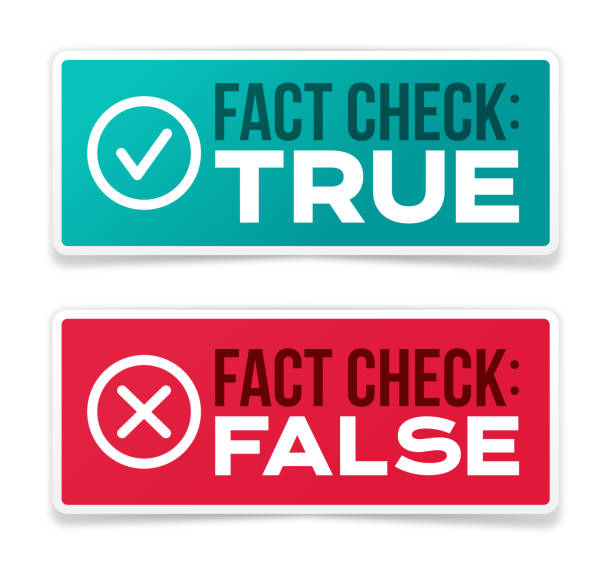
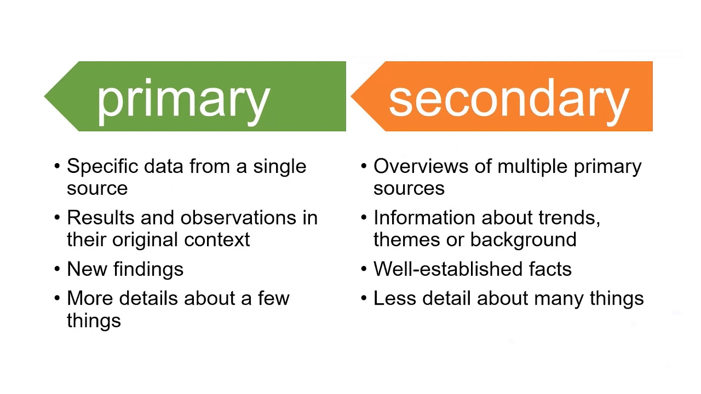
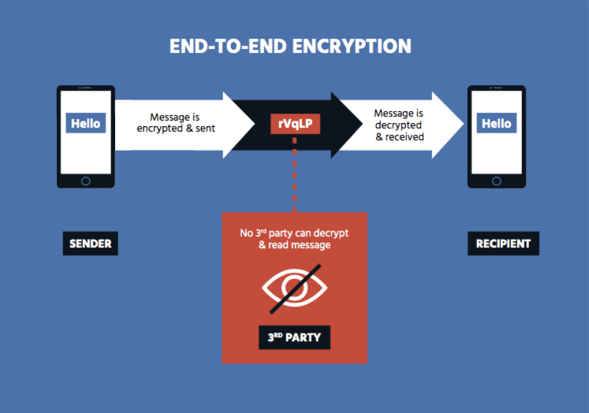
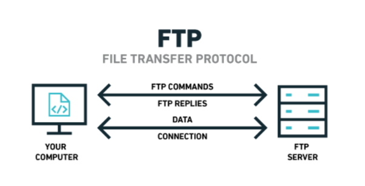

By Daniel Keaney
Provide three methods by which a user could verify the accuracy of information located on the Internet.

Identify who created the information and determine whether it is reliable and credible through the use of research.
Checking sources for validity against other reliable sources.
Is the information being presented in a biased way is it more fact or opinion based
What is the difference between a primary and a secondary source of data?

Primary data refers to the first hand data gathered by the researcher themselves. Secondary data means data collected by someone else earlier. Surveys, observation experiments, questionnaire, personal interview, etc. Government publications, websites, books, journal articles, internal records etc.
List three methods of making data transfer via the internet more secure.

Email encryption (SSL and TLS)
website encryption (HTTPS)
Cloud services (google drive. dropbox and FTP servers)
Explain the term netiquette.
Netiquette which is a portmanteau of net and etiquette refers to using courtesy and politeness when communicating with others online.
What three facts should be included in a list of sources when acknowledging information obtained from a website?
You must acknowledge the original author and where you found the material within the resource. This can be done using an:
URL address of website
Authors name
Source Title
Date of publication
Name two ways in which the use of the internet has changed the way in which people work.
in addition to communication, the internet has also dramatically changed the way we collaborate while working on a project, mainly by providing us with many more tools we can use to collaborate. One of the most widely used of these tools is Google's suite of productivity programs (Docs and Sheets, mainly google drive)
Explain TCP/IP and FTP.

- FTP is a file transfer protocol, which means it is used to transfer files between a client and a server, whereas TCP is a communication protocol used to exchange data between networks. They come together when FTP sends data over a TCP/IP connection.
The Internet has changed the way we interact with our family and friends. Now everyone is connected to everyone else in a simpler, more accessible, and more immediate way, we can acheive our personal relationships using our laptops, smart phones, and tablets. The internet has allowed us to stay connected almost anywhere around the world. We are not required to work in the office for example but instead work from home via the internet. People are also able to share information and collaborate a lot quicker due to the speedy connections of the internet.
- The Internet Protocol is the network layer communications protocol in the Internet protocol suite for relaying datagrams across network boundaries. Its routing function enables internetworking, and essentially establishes the Internet.
- TCP is used for organizing data in a way that ensures the secure transmission between the server and client. It guarantees the integrity of data sent over the network, regardless of the amount. For this reason, it is used to transmit data from other higher-level protocols that require all transmitted data to arrive.